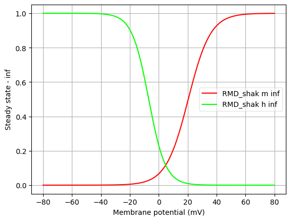

RMD_shak
Ion: k
g = gmax * m * h
RMD_shak channel from Nicoletti et al. 2019



Channel information at: T = 6.3 degC, E_rev = -80.0 mV, [Ca2+] = 5e-05 mM
|
RMD_shak Ion: k g = gmax * m * h RMD_shak channel from Nicoletti et al. 2019 |
 |
|